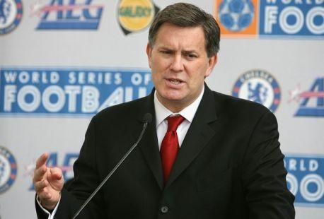
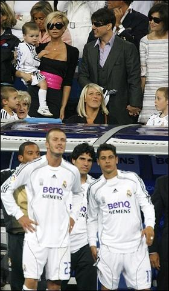

Chương Mười Sáu

im Leiweke là giám đốc điều hành (CEO) của AEG, công ty chuyên tổ chức các sự kiện âm nhạc, đồng thời là đơn vị chủ quản CLB Los Angeles Galaxy, một đội bóng thuộc Giải Bóng Đá Nhà Nghề Mỹ (MLS). Từ năm 2002, lúc David Beckham còn khoác áo Manchester United, Leiweke đã đầu tư xây dựng mối quan hệ với anh, hy vọng trong tương lai sẽ mời được anh về MLS. Vốn cùng hoạt động trong giới âm nhạc, Leiweke biết rõ Victoria và Simon Fuller, tận dụng mối liên kết đó, ông ta làm thân với David. Năm 2005, khi David mở học viện bóng đá ở London và Los Angeles, AEG bỏ ra hàng chục triệu bảng để hùn vốn cùng anh. Cùng năm ấy, Leiweke đóng vai trò chính trong việc mời Real Madrid sang đá giao hữu với hội tuyển các ngôi sao MLS.
Cuối năm 2006, cơ hội cho Leiweke cuối cùng cũng đến. Đã ngán đến tận cổ sau ba năm trắng tay với Real, bước vào mùa 2006 – 2007, David càng bất mãn vì thường xuyên bị tân HLV Fabio Capello bỏ rơi trên băng ghế dự bị. Do đó, cuộc đàm phán tái ký hợp đồng giữa anh và Real không đi đến đâu. Ngay tức khắc, Galaxy nhảy vào cuộc. “Phải hành động thật nhanh”, Leiweke báo cáo lên tài phiệt Philip Anschutz, ông chủ AEG, “Nếu Beckham không tái ký với Real trước tháng một, anh chàng sẽ thuộc về chúng ta”.[1]

Tim Leiweke – CEO của AEG (Ảnh: Theoriginalwinger)
Thương lượng giữa Galaxy và David diễn tiến rất suôn sẻ, Leiweke đã đặt sẵn quảng cáo trên tờ New York Times vào 11 tháng 1 để loan tin Beckham tới Hoa Kỳ. Tuy vậy, ngày 10 tháng 1, David và nhà quản lý Simon Fuller có cuộc họp với ban lãnh đạo Real Madrid. Vốn cẩn thận, David muốn đợi tới buổi họp, thảo luận với Bernabeu thêm một lần cuối, trước khi quyết định có ký hợp đồng với Galaxy hay không. Leiweke lo sốt vó: Nếu David quyết định ở lại, sẽ phải hủy quảng cáo với New York Times. Hủy sớm thì không sao, chứ hủy sau sáu giờ sáng ngày 10 tháng 1 thì sẽ phải bồi thường đến 100 000 đô la. Buổi họp ở TBN diễn ra đúng vào khoảng sáu giờ sáng giờ Los Angeles, nên thời giờ rất sát sao, chỉ cần chậm một phút là tốn bộn tiền.
Đúng sáu giờ sáng, vẫn chưa có tin gì từ TBN, Leiweke đành liên lạc với New York Times, thông báo ý định hủy quảng cáo, may là báo này thương tình, gia hạn cho AEG thêm 20 phút. 6 giờ 10, chuông điện thoại reo. Đầu dây bên kia là Simon Fuller.
-Cho đăng quảng cáo đi – Fuller nói – Đã họp xong. David đã quyết định. Chúng tôi đã thông báo cho phía Real Madrid về việc ra đi.
Hay tin David bỏ Real sang Galaxy, HLV Capello giận dữ, tuyên bố từ giờ đến cuối mùa sẽ không cho anh ra sân thêm một lần nào. Trước đó, tân HLV tuyển Anh, Steve McClaren cũng đã loại David khỏi ĐTQG, vì cho rằng anh đã hết thời.
Rơi vào hoàn cảnh David, người khác có thể sẽ suy nghĩ tiêu cực: À, không cho ông ra sân à? Thế càng tốt, đằng nào cuối mùa ông cũng đi, bây giờ ông cứ ngồi chơi lãnh tiền. David thì không vậy. Dù không được Capello sử dụng, anh vẫn chăm chỉ, ngày ngày ra sân tập luyện như thường. Về phía Capello, ông cũng là một bậc trưởng lão kỳ cựu trong làng bóng đá, không phải hạng cố chấp. Ấn tượng trước thái độ chuyên nghiệp của Beckham, thêm vào sức ép dữ dội sau hai trận thua liên tiếp trước Villareal và Levante, ông gọi lại David cho trận gặp Sociedad. Capello gọi, David liền đáp lời. Anh sút tung lưới Sociedad từ vị trí sút phạt cách xa khung thành tới 30m, góp công giúp Real thắng 2 – 1.
Từ chỗ bị loại khỏi đội hình, David trở lại là trụ cột của Bernabeu. Như hồi xuân, anh thi đấu đầy hứng khởi, thể hiện phong độ đỉnh cao không kém gì thời khoác áo Manchester United. Được David truyền cảm hứng, Real từ hạng tư lần lượt leo lên hạng ba, hạng nhì, để đến vòng 34 thì đánh bật Barcelona khỏi ngôi đỉnh bảng. Trận cuối mùa giải, David chấn thương, phải rời sân giữa chừng, song Real vẫn dễ dàng vượt qua Mallorca với tỷ số 3 – 1, lần đầu tiên lên ngôi VĐQG kể từ 2003. Thế nhưng cũng cần nói thêm, Real mùa 2006- 2007 là một trong những nhà vô địch Liga kém thuyết phục nhất lịch sử. Họ bằng điểm Barcelona (76), thua xa về hiệu số thắng bại (26 so với 45), chỉ giành cúp nhờ vào kết quả đối đầu trực tiếp (thắng Barca 2 – 0 ở lượt đi, hòa 3 - 3 lượt về). Vậy nên, vừa đưa đội đăng quang, Fabio Capello đã bị…sa thải!
Trên mặt trận quốc gia, tuyển Anh vắng Beckham bị sa lầy ở vòng loại Euro 2008. Noi gương Capello, McClaren cho gọi lại David. Trong hai trận đầu tái xuất, David kiến tạo ba bàn thắng cho đồng đội, giúp Tam Sư hòa Brazil 1 – 1 (giao hữu) và thắng Estonia 3 – 0 (vòng loại Euro), chứng tỏ cho HLV thấy còn lâu anh mới hết thời. Song Anh không được may mắn như Real, dù có David trong nửa sau vòng loại, đội vẫn chỉ xếp thứ ba, sau Croatia và Nga, đánh rơi tấm vé dự Euro.
Sự chói sáng bất ngờ của David khiến Real tiếc hùi hụi. “Beckham đã trở lại là một cầu thủ lớn, thể hiện phong độ tương đương thời ở Manchester United ”, chủ tịch Ramon Calderon, người kế nhiệm Florentino Perez, nói, “Chúng ta đều đã sai lầm khi để anh ta ra đi”. Sai thì phải sửa, ban lãnh đạo Real tìm cách thuyết phục Beckham hủy hợp đồng với Los Angeles Galaxy, đồng thời liên tục liên hệ với Galaxy, hy vọng có thể mua lại David. Nhưng hợp đồng đã ký, làm sao có thể đổi khác. Tim Leiweke mất đến 5 năm trời theo đuổi mới có được David Beckham, trời có sập, ông ta cũng không nhả.
Trong màu áo Real, David thành công hay thất bại? Xét thuần túy trên phương diện chuyên môn, câu trả lời đã quá hiển nhiên: Thất bại. Tại Old Trafford, David giành Cúp C1, hầu như năm nào cũng VĐQG, và được tôn vinh với hàng loạt giải thưởng cá nhân. Ở Bernabeu, anh phải đợi đến mùa cuối cùng mới vô địch được Liga. Trước đó chỉ có mỗi một Siêu Cúp “quèn”.
Tất nhiên, thất bại của Real là thất bại tập thể. Không giành được danh hiệu thì những Zidane, Figo, Ronaldo…cũng phải gánh trách nhiệm, chẳng phải chỉ một mình Beckham. Nhưng cũng phải thừa nhận, về phong độ, Beckham của Real không thể sánh được với Beckham của United. Sát cánh cùng những quả bóng vàng, vì sao David không những không đi lên, mà lại có phần sa sút? Phải chăng vì thiếu đi Sir Alex Ferguson?
Sir Alex đã dạy dỗ David từ khi anh còn nhỏ. Dù David có nổi tiếng tới đâu, trong mắt Sir, anh vẫn là một cậu học trò cần được bảo ban, uốn nắn. Nhờ Sir nghiêm khắc, dữ dội, David mới không quá sa đà vào những hoạt động bên ngoài. Dẫu không ngăn được David bước chân vào showbiz, Sir vẫn cố gắng tiết chế anh, được chừng nào hay chừng nấy. Sang đến Madrid, David giữ địa vị “gà đẻ trứng vàng”, là “thần tài” của CLB, ban lãnh đạo Real từ chủ tịch trở xuống không ai dám quản David như Sir Alex đã làm, nên anh trở nên mất tập trung hơn. Trong thời gian khoác áo Real, không những David tham gia rất nhiều hoạt động xã hội như đã nhắc đến ở chương trước, mà còn lấn sân sang điện ảnh, tham gia diễn xuất trong Goal, series phim về một chàng trai Mexico sang Anh lập nghiệp bóng đá, và trở thành một siêu sao. Những hoạt động trên không xấu, thậm chí tốt nữa, song giành quá nhiều thời gian cho chúng, không khỏi ảnh hưởng đến phong độ trên sân.
Nói về chuyên môn thì vậy, còn về tài chính, dĩ nhiên David lẫn Real đều thành công rực rỡ. Tại Bernabeu, David là cầu thủ bóng đá có thu nhập cao nhất hành tinh. 4 năm chơi cho Real, ước tính anh kiếm được gần 100 triệu bảng. Cũng trong 4 năm đó, doanh thu thương mại của Real tăng vùn vụt, đến gần 800 triệu. Đội xây dựng được chỗ đứng vững chắc trên thị trường Viễn Đông. Người hâm mộ có thể chỉ vì Beckham mà xem Real Madrid, nhưng xem liền 4 năm, không lẽ không yêu luôn CLB?

Victoria bế con trai Cruz đến xem chồng thi đấu. Bên cạnh cô là cặp đôi Hollywood: Tom Cruise và Katie Holmes. (Ảnh: Thesun)
Chú thích
[1] Hợp đồng giữa David và Real sẽ hết hạn vào giữa năm 2007. Theo luật, nếu không tái ký trước tháng 1, 2007, anh có quyền đàm phán tự do với CLB khác.